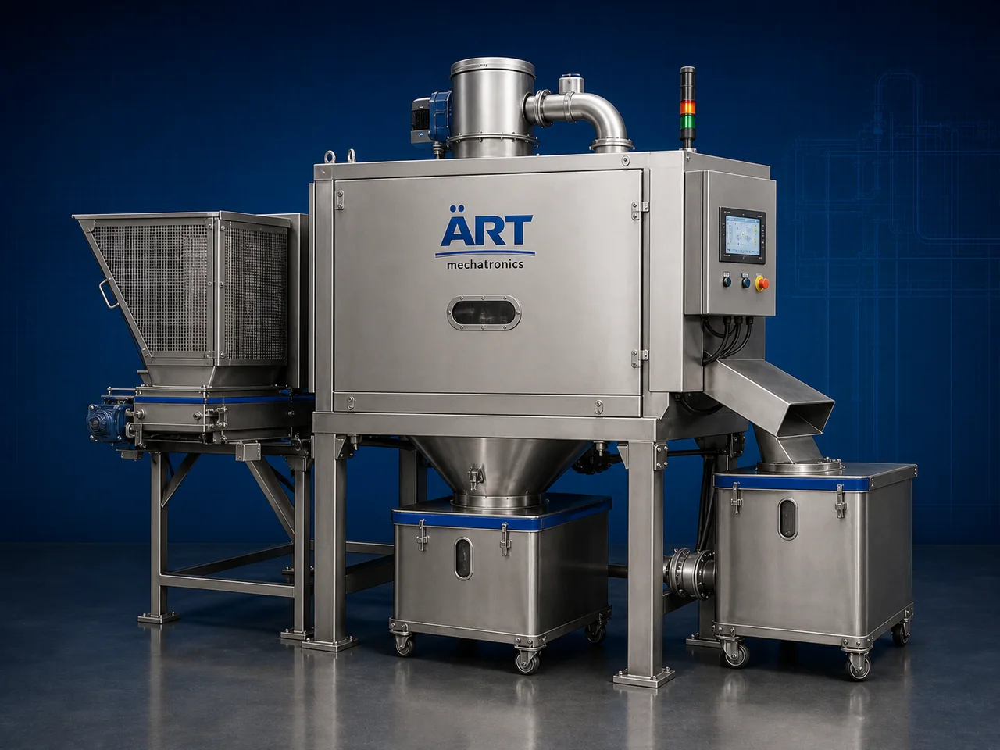

Reclaimer Machine (Industrial Material Recovery & Separation System)
A Reclaimer Machine, also known as a Material Recovery Machine, Industrial Reclaiming System, Tobacco Reclaimer Machine, or Waste Material Separation System, is an advanced industrial processing solution designed for material recovery, separation, reclaiming, extraction, recycling, waste processing, and high-efficiency industrial separation operations across tobacco processing, food processing, recycling, agro industries, packaging industries, biomass processing, and industrial manufacturing sectors.

About the Reclaimer Machine
Reclaimer systems are widely used for:
- Tobacco recovery from discarded cigarettes
- Material separation and reclaiming
- Industrial waste recovery
- Packaging material separation
- Biomass reclaiming operations
- Powder and granule separation
- Industrial recycling operations
- Reusable material extraction systems
The machine improves:
- Material recovery efficiency
- Production cost savings
- Waste reduction
- Recycling productivity
- Product recovery consistency
- Industrial sustainability
- Automation efficiency
Industrial reclaimer machines use:
- Precision separation mechanisms
- Vibratory and screening systems
- Air classification technology
- PLC and HMI automation controls
- Conveyor synchronized material handling systems
to automatically recover and separate reusable materials with superior accuracy and high industrial productivity.
Reclaimer machines are widely used in industries such as:
Tobacco industries Recycling industries Food processing industries Packaging industries Agro industries Biomass industries Chemical industries Industrial manufacturing industries
where material recovery, waste reduction, and efficient recycling operations are essential.
The machine is highly suitable for:
- Tobacco recovery from cigarette waste
- Material reclaiming operations
- Industrial recycling applications
- Powder and granule separation
- Packaging waste recovery
- Industrial waste management systems
ART Mechatronics offers high-performance reclaimer machines, engineered for continuous industrial operation, precision material recovery performance, rugged construction, and reliable long-term industrial productivity.
Working Principle of Reclaimer Machine
- 1. Material Feeding & Loading Discarded products or mixed materials are automatically fed into reclaiming section for processing operation.
- 2. Material Separation & Recovery Process Machine automatically separates reusable materials using screening systems, airflow separation, vibration mechanisms, and precision recovery technology.
Intelligent synchronization ensures smooth material handling and accurate reclaiming operations.
- 3. Recovery & Separation Operation Machine handles processing of: ✔ Discarded cigarettes ✔ Tobacco waste ✔ Packaging waste ✔ Powders and granules ✔ Agro materials ✔ Biomass products ✔ Recyclable materials ✔ Industrial waste materials
accurately and continuously.
- 4. Material Reclaiming & Classification Process Machine performs: Material separation Recovery and reclaiming Screening Air classification Dust removal Reusable material extraction
for efficient industrial recycling and waste management operations.
- 5. Intelligent Automation & Safety Integration Optional systems include: Dust extraction systems Automatic feeding systems Air filtration systems Safety guarding systems Material collection systems
- 6. Finished Material Discharge Recovered materials discharged automatically for: Reprocessing operations Packaging systems Storage silos Industrial reuse Export shipment handling
Types of Reclaimer Machines
- 1. Tobacco Reclaimer Machine Designed for: ✔ Tobacco recovery from discarded cigarette applications
- 2. Powder & Granule Recovery Machine Suitable for: ✔ Industrial material reclaiming systems
- 3. Packaging Waste Reclaimer Machine Uses: ✔ Packaging material recycling and recovery operations
- 4. Biomass & Agro Material Reclaimer Designed for: ✔ Biomass processing and agro recovery systems
- 5. Heavy Duty Industrial Reclaimer Machine Suitable for: ✔ Continuous industrial recovery operations
- 6. Fully Automatic Material Recovery System Designed for: ✔ Complete industrial recycling automation lines
Industries Using Reclaimer Machines
🚬 Tobacco Industry Tobacco recovery, cigarette waste processing, and reusable material reclaiming systems. ♻️ Recycling Industry Industrial waste recovery and recyclable material processing systems. 🍅 Food Processing Industry Ingredient recovery, powder reclaiming, and industrial separation systems. 📦 Packaging Industry Packaging waste recovery and material separation operations. 🌾 Agro & Biomass Industry Biomass recovery, agro waste processing, and reusable material systems. ⚗️ Chemical Industry Powder separation, material reclaiming, and industrial recycling systems.
Features & Advantages
- High-efficiency automatic material recovery operation
- Accurate and reliable material separation systems
- Reduces industrial waste and material losses
- PLC and automation control systems
- Improves recycling productivity and sustainability
- Reduces manual recovery dependency
- Supports multiple industrial materials and waste products
- Reliable long-term industrial performance
- Smooth integration with industrial recycling lines
Technical Highlights
Machine Type: Reclaimer machine Industrial material recovery system Waste material separation machine Material Compatibility: Tobacco waste Discarded cigarettes Packaging waste Powders and granules Biomass products Agro materials Industrial recyclable materials Integration: Vibratory separation systems Air classification systems Automatic feeding systems Dust extraction systems Features: PLC control system Touchscreen HMI Heavy-duty steel construction Material collection systems Continuous duty operation Applications: Material reclaiming Waste recovery Industrial recycling Tobacco separation Powder recovery Industrial material extraction Automation: Semi-automatic Fully automatic industrial systems
Turnkey Material Recovery Solutions
ART Mechatronics offers: Complete industrial reclaiming systems Automatic material recovery solutions Industrial recycling automation systems Dust handling integration systems Installation & commissioning After-sales service & AMC
Why Choose Art Mechatronics
Expertise in industrial processing and automation systems Customized reclaiming solutions for multiple industries High-performance and precision recovery technology Advanced PLC and automation systems Proven industrial recycling performance across sectors
Applications
Tobacco Processing Plants Industrial Recycling Facilities Food Manufacturing Units Packaging Waste Processing Plants Agro Product Processing Industries Industrial Manufacturing Industries
Related Process Equipment machines
Get pricing & specs for the Reclaimer Machine
Share the product, target capacity, current process and plant location. These details help our engineers discuss the right machine or line configuration.
One partner, from design to start-up
ART Mechatronics designs, manufactures, installs and commissions your Reclaimer Machine solution with regional presence in India, UAE and Thailand.